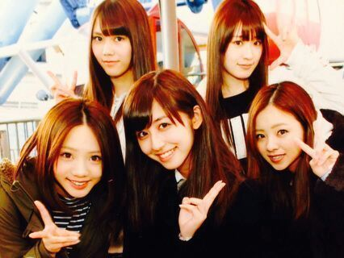
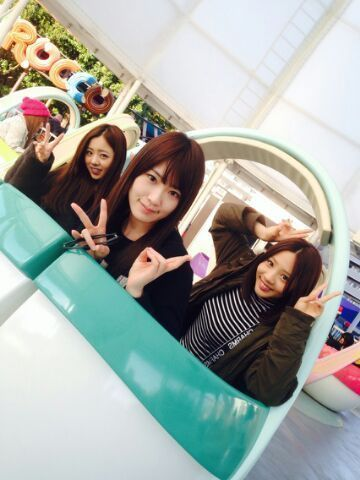
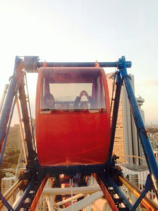

おう？ カフェなう。なんだけど
近くのテーブルに７人のママ達がいるよ．
あ〜 これはドラマでよく見るやつだー.
ママ友ってやつだー.
ママ付き合いって大変なんでちょー
仲良くしてよー お願いだから
ギスギスしたら ろってぃー許ちませんよー.
ヾ(´▽｀*)ゝ
は〜い どおも。 ろってぃーです( ・∇・)
見てぇ〜 あのね、観覧車乗る前にとってもらったの。
５人のお気に入りの写真だあよ。

blogのコメント読んでて
とっても嬉しゅうキモチになったよ(*^^*)
ユニット曲のこと 色々と褒めてくれてありがとう。
アンダーメンバーからユニットに入れたこと
喜んでくれてありがとう。
皆がそう思ってくれたことが ろってぃーは
すごく 嬉ちーのです。
ヌハッ...

ろってぃー かずみん あみ
しちゅもん返します!!!
☆ろっちーのウチワつくるんです！文字何て書いたらいい？ 後、色も(*^ω^*)
★うわ〜〜お ＼(^o^)／嬉しゅうキモチ
『ろってぃー』『Rotty』『まひろ』だったら
あっ！ろってぃーウチワだ！ ってすぐ気づく＼(^o^)／
目立つ色がいいなぁ〜 ♪
何色やろ？ 黒に蛍光色がいいのかなあ？
何色でも ろってぃーは嬉しゅうよ(*^^*)
本当ありがとねん！
☆ろってぃーはトランプ強い？
★あのねーっ、普通です！！笑
☆ユニット曲は全握に行けば聴ける？後MVはある？
★全握で歌うかもよ(о´∀`о)
でも、全部で歌えるかはわからないけど
東京、名古屋、京都... どこかで歌うかも！
MVはないの:-<
☆HMVさんの取材のことまた告知してな？
★するするー。 ウギウギ
☆最近、オシャレ度か増してきてるんやない？
★ほんとお？ いや...何かね、周りから
「メンバーとかさあ『今日のコーデ^^』って書いて
載せたりしてるし まひろも 普段着てる私服載せーや、もったいないよ。」
って言ってくれて、かしこまりました〜(*´ω｀*)ってなって 最近 載せることにしたんよぉ〜♪
これからも 載せていくねんヾ(´▽｀*)ゝよろよろ。
☆予防接種泣かなかった？
★Rottyなぁ〜 注射好きやねん.
予防接種の後って３日間位 赤く腫れるぢゃん？
「 揉んだりしたらあかんよ！」って言わてたけど
次の日 チームDの５人でお出かけして
ずっと 揉みもみされてた...(*´ω｀*)あははは、は。笑
☆チェックのスカートどこの洋服？
★『E hyphen world gallery』ってとこだったお♪
☆ろってぃーは「ひつじの涙」って漫画知ってるぅ？
★あ〜 うっ おう？ 知らないでちゅ(´；ω；`)ゴメネ
☆僕、コックさんやってんだけど、ろってぃーは
何パスタが好きですか？
★コックさん コックさん コックさんw キャー
カルボナーラです( ・∇・)!!!
ちなみに、 絶対 卵のっとってほすぃー!
半熟卵、温泉卵、生卵とかが大好きで、
あの〜 よくサラダに入ってあるプルルンっとした卵あんぢゃん？
あれが大好きなの\(〃ω〃)/
・・・・・
とうっ!!!

ちはる あみ 『とうっ』ってしてるのが ろってぃー。
ぢゃあねぇ〜ん(*´ω｀*)
まった 更新しまぁーす
のし Rotty☆